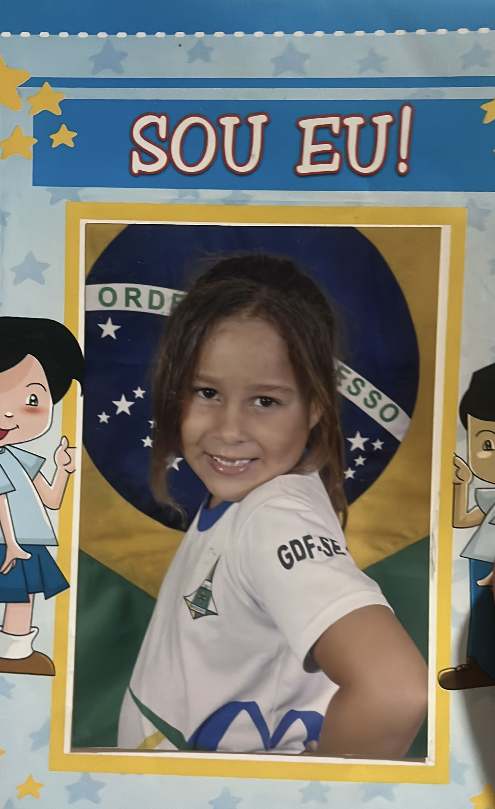
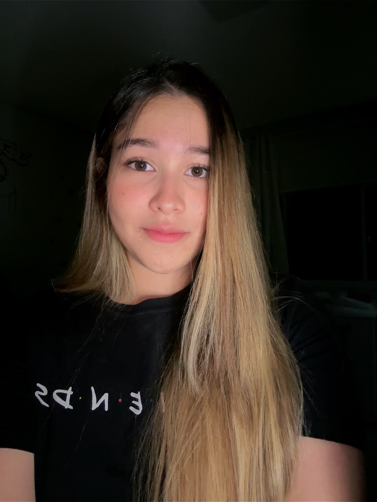

O COMEÇO
Minha versão pequenininha
Onde minha história começou.
Sou uma pessoa curiosa, dedicada e sempre disposta a aprender coisas novas. Minha trajetória na tecnologia começou com o curso técnico em Informática e continua sendo construída agora na graduação em Ciência da Computação.
Gosto de entender como as coisas funcionam, explorar novas possibilidades e transformar ideias em projetos. Acredito que cada experiência é uma oportunidade de desenvolver conhecimentos e descobrir novos caminhos.
Conheça meus projetos →const sobreMim = {
nome: 'Emilly',
area: 'Tecnologia',
formacao: 'Informática',
curso: 'Ciência da Computação',
objetivo: 'Evoluir sempre'
};
console. log ('Em constante evolução!');
Uma pequena lembrança de quem eu fui e de quem estou me tornando.

Onde minha história começou.

Novos sonhos, experiências e descobertas.
Cada etapa contribuiu para construir a profissional que desejo me tornar.
Foi onde comecei a desenvolver minha base na área da tecnologia, conhecendo conceitos de programação, lógica computacional, desenvolvimento web e projetos acadêmicos.
Atualmente curso Ciência da Computação, aprofundando meus conhecimentos em programação, algoritmos, computação e desenvolvimento de soluções.
Algumas das tecnologias e ferramentas que fazem parte da minha formação.
Além da formação acadêmica, também tenho contato com atividades administrativas, organização de documentos, elaboração de planilhas e utilização de ferramentas digitais.
Essas experiências contribuem para desenvolver minha organização, responsabilidade, comunicação e capacidade de trabalhar em equipe.
Também estudei inglês durante quatro anos no Centro Interescolar de Línguas do Gama (CIL). Mesmo tendo interrompido o curso, continuo estudando por conta própria e buscando evoluir no idioma.
Acredito que aprender vai muito além da graduação: é um processo constante, construído com curiosidade, dedicação e novas experiências.
Quero continuar desenvolvendo minhas habilidades, explorando diferentes áreas da tecnologia e participando de projetos que transformem conhecimento em soluções.
Vamos conversar? →